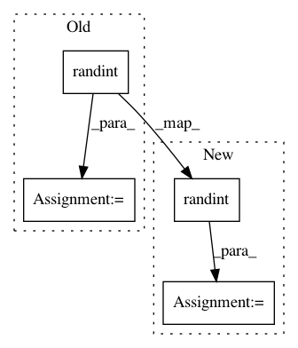

e66371367e660fb7bdfcc0e7395b4a214dc050db,tensorpack/dataflow/imgaug/imgproc.py,GaussianBlur,_get_augment_params,#GaussianBlur#Any#,175
Before Change
self._init(locals())
def _get_augment_params(self, _):
sx, sy = self.rng.randint(self.max_size, size=(2,))
sx = sx * 2 + 1
sy = sy * 2 + 1
return sx, sy
After Change
self._init(locals())
def _get_augment_params(self, _):
size_xy = self.rng.randint(self.size_range[0], self.size_range[1], size=(2,)) * 2 + 1
sigma_xy = self._rand_range(*self.sigma_range, size=(2,))
if self.symmetric:
size_xy[1] = size_xy[0]
sigma_xy[1] = sigma_xy[0]
In pattern: SUPERPATTERN
Frequency: 3
Non-data size: 4
Instances
Project Name: tensorpack/tensorpack
Commit Name: e66371367e660fb7bdfcc0e7395b4a214dc050db
Time: 2020-04-24
Author: ppwwyyxx@users.noreply.github.com
File Name: tensorpack/dataflow/imgaug/imgproc.py
Class Name: GaussianBlur
Method Name: _get_augment_params
Project Name: tsurumeso/waifu2x-chainer
Commit Name: 77b5596d0a032e2a3738a58c74832fa6fb6500e2
Time: 2017-02-28
Author: nstm101339@gmail.com
File Name: lib/pairwise_transform.py
Class Name:
Method Name: _noise
Project Name: chainer/chainercv
Commit Name: 4dcb9d0a52cd4bf04d69ca3d17fc14caacab0575
Time: 2017-06-06
Author: yuyuniitani@gmail.com
File Name: tests/datasets_tests/test_voc/test_voc_detection_dataset.py
Class Name: TestVOCDetectionDataset
Method Name: test_get_example